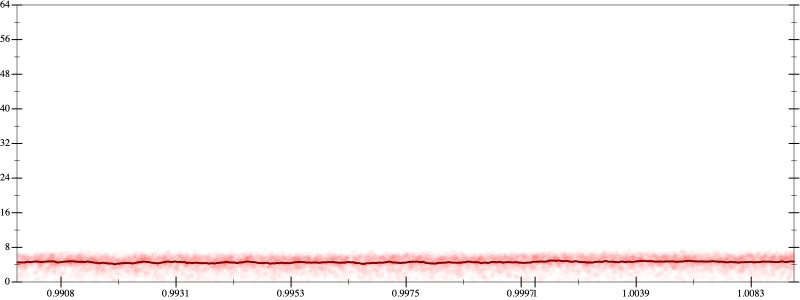
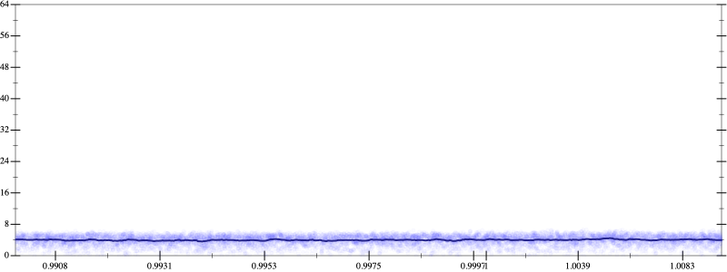
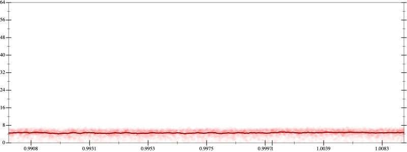
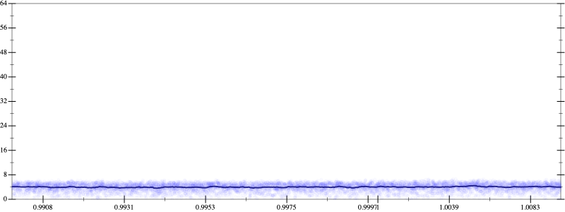

Initial program 4.6
\[\left(\left(\left(\left(\left(\left(\left(\left(\left(1.0 + -11.0 \cdot x\right) + 27.5 \cdot \left(x \cdot x\right)\right) + -27.5 \cdot \left(\left(x \cdot x\right) \cdot x\right)\right) + 13.75 \cdot \left(\left(\left(x \cdot x\right) \cdot x\right) \cdot x\right)\right) + -3.85 \cdot \left(\left(\left(\left(x \cdot x\right) \cdot x\right) \cdot x\right) \cdot x\right)\right) + 0.641667 \cdot \left(\left(\left(\left(\left(x \cdot x\right) \cdot x\right) \cdot x\right) \cdot x\right) \cdot x\right)\right) + -0.065476 \cdot \left(\left(\left(\left(\left(\left(x \cdot x\right) \cdot x\right) \cdot x\right) \cdot x\right) \cdot x\right) \cdot x\right)\right) + 0.004092 \cdot \left(\left(\left(\left(\left(\left(\left(x \cdot x\right) \cdot x\right) \cdot x\right) \cdot x\right) \cdot x\right) \cdot x\right) \cdot x\right)\right) + -0.000152 \cdot \left(\left(\left(\left(\left(\left(\left(\left(x \cdot x\right) \cdot x\right) \cdot x\right) \cdot x\right) \cdot x\right) \cdot x\right) \cdot x\right) \cdot x\right)\right) + 3 \cdot 10^{-06} \cdot \left(\left(\left(\left(\left(\left(\left(\left(\left(x \cdot x\right) \cdot x\right) \cdot x\right) \cdot x\right) \cdot x\right) \cdot x\right) \cdot x\right) \cdot x\right) \cdot x\right)\]
Applied simplify4.3
\[\leadsto \color{blue}{\left(\left(\left(x \cdot x\right) \cdot \left(-27.5 \cdot x + 27.5\right) + \left(x \cdot -11.0 + 1.0\right)\right) + \left(\left({x}^{3} \cdot {x}^{3}\right) \cdot \left(0.641667 + -0.065476 \cdot x\right) + \left(\left(x \cdot x\right) \cdot \left(x \cdot x\right)\right) \cdot \left(13.75 + -3.85 \cdot x\right)\right)\right) + \left(\left(\left(\left(x \cdot x\right) \cdot \left(x \cdot x\right)\right) \cdot \left(\left(x \cdot x\right) \cdot \left(x \cdot x\right)\right)\right) \cdot \left(3 \cdot 10^{-06} \cdot \left(x \cdot x\right)\right) + \left(\left(\left(x \cdot x\right) \cdot \left(x \cdot x\right)\right) \cdot \left(\left(x \cdot x\right) \cdot \left(x \cdot x\right)\right)\right) \cdot \left(-0.000152 \cdot x + 0.004092\right)\right)}\]
- Using strategy
rm Applied associate-+l+4.2
\[\leadsto \color{blue}{\left(\left(x \cdot x\right) \cdot \left(-27.5 \cdot x + 27.5\right) + \left(\left(x \cdot -11.0 + 1.0\right) + \left(\left({x}^{3} \cdot {x}^{3}\right) \cdot \left(0.641667 + -0.065476 \cdot x\right) + \left(\left(x \cdot x\right) \cdot \left(x \cdot x\right)\right) \cdot \left(13.75 + -3.85 \cdot x\right)\right)\right)\right)} + \left(\left(\left(\left(x \cdot x\right) \cdot \left(x \cdot x\right)\right) \cdot \left(\left(x \cdot x\right) \cdot \left(x \cdot x\right)\right)\right) \cdot \left(3 \cdot 10^{-06} \cdot \left(x \cdot x\right)\right) + \left(\left(\left(x \cdot x\right) \cdot \left(x \cdot x\right)\right) \cdot \left(\left(x \cdot x\right) \cdot \left(x \cdot x\right)\right)\right) \cdot \left(-0.000152 \cdot x + 0.004092\right)\right)\]
- Using strategy
rm Applied add-log-exp4.2
\[\leadsto \left(\left(x \cdot x\right) \cdot \left(-27.5 \cdot x + 27.5\right) + \left(\left(x \cdot -11.0 + 1.0\right) + \color{blue}{\log \left(e^{\left({x}^{3} \cdot {x}^{3}\right) \cdot \left(0.641667 + -0.065476 \cdot x\right) + \left(\left(x \cdot x\right) \cdot \left(x \cdot x\right)\right) \cdot \left(13.75 + -3.85 \cdot x\right)}\right)}\right)\right) + \left(\left(\left(\left(x \cdot x\right) \cdot \left(x \cdot x\right)\right) \cdot \left(\left(x \cdot x\right) \cdot \left(x \cdot x\right)\right)\right) \cdot \left(3 \cdot 10^{-06} \cdot \left(x \cdot x\right)\right) + \left(\left(\left(x \cdot x\right) \cdot \left(x \cdot x\right)\right) \cdot \left(\left(x \cdot x\right) \cdot \left(x \cdot x\right)\right)\right) \cdot \left(-0.000152 \cdot x + 0.004092\right)\right)\]
Applied add-log-exp4.2
\[\leadsto \left(\left(x \cdot x\right) \cdot \left(-27.5 \cdot x + 27.5\right) + \left(\color{blue}{\log \left(e^{x \cdot -11.0 + 1.0}\right)} + \log \left(e^{\left({x}^{3} \cdot {x}^{3}\right) \cdot \left(0.641667 + -0.065476 \cdot x\right) + \left(\left(x \cdot x\right) \cdot \left(x \cdot x\right)\right) \cdot \left(13.75 + -3.85 \cdot x\right)}\right)\right)\right) + \left(\left(\left(\left(x \cdot x\right) \cdot \left(x \cdot x\right)\right) \cdot \left(\left(x \cdot x\right) \cdot \left(x \cdot x\right)\right)\right) \cdot \left(3 \cdot 10^{-06} \cdot \left(x \cdot x\right)\right) + \left(\left(\left(x \cdot x\right) \cdot \left(x \cdot x\right)\right) \cdot \left(\left(x \cdot x\right) \cdot \left(x \cdot x\right)\right)\right) \cdot \left(-0.000152 \cdot x + 0.004092\right)\right)\]
Applied sum-log4.3
\[\leadsto \left(\left(x \cdot x\right) \cdot \left(-27.5 \cdot x + 27.5\right) + \color{blue}{\log \left(e^{x \cdot -11.0 + 1.0} \cdot e^{\left({x}^{3} \cdot {x}^{3}\right) \cdot \left(0.641667 + -0.065476 \cdot x\right) + \left(\left(x \cdot x\right) \cdot \left(x \cdot x\right)\right) \cdot \left(13.75 + -3.85 \cdot x\right)}\right)}\right) + \left(\left(\left(\left(x \cdot x\right) \cdot \left(x \cdot x\right)\right) \cdot \left(\left(x \cdot x\right) \cdot \left(x \cdot x\right)\right)\right) \cdot \left(3 \cdot 10^{-06} \cdot \left(x \cdot x\right)\right) + \left(\left(\left(x \cdot x\right) \cdot \left(x \cdot x\right)\right) \cdot \left(\left(x \cdot x\right) \cdot \left(x \cdot x\right)\right)\right) \cdot \left(-0.000152 \cdot x + 0.004092\right)\right)\]
Applied simplify4.0
\[\leadsto \left(\left(x \cdot x\right) \cdot \left(-27.5 \cdot x + 27.5\right) + \log \color{blue}{\left(\left({\left({\left(e^{x}\right)}^{\left({x}^{3}\right)}\right)}^{\left(x \cdot -3.85 + 13.75\right)} \cdot e^{1.0 + x \cdot -11.0}\right) \cdot e^{\left({x}^{3} \cdot {x}^{3}\right) \cdot \left(x \cdot -0.065476 + 0.641667\right)}\right)}\right) + \left(\left(\left(\left(x \cdot x\right) \cdot \left(x \cdot x\right)\right) \cdot \left(\left(x \cdot x\right) \cdot \left(x \cdot x\right)\right)\right) \cdot \left(3 \cdot 10^{-06} \cdot \left(x \cdot x\right)\right) + \left(\left(\left(x \cdot x\right) \cdot \left(x \cdot x\right)\right) \cdot \left(\left(x \cdot x\right) \cdot \left(x \cdot x\right)\right)\right) \cdot \left(-0.000152 \cdot x + 0.004092\right)\right)\]
- Using strategy
rm Applied pow-pow4.0
\[\leadsto \left(\left(x \cdot x\right) \cdot \left(-27.5 \cdot x + 27.5\right) + \log \left(\left(\color{blue}{{\left(e^{x}\right)}^{\left({x}^{3} \cdot \left(x \cdot -3.85 + 13.75\right)\right)}} \cdot e^{1.0 + x \cdot -11.0}\right) \cdot e^{\left({x}^{3} \cdot {x}^{3}\right) \cdot \left(x \cdot -0.065476 + 0.641667\right)}\right)\right) + \left(\left(\left(\left(x \cdot x\right) \cdot \left(x \cdot x\right)\right) \cdot \left(\left(x \cdot x\right) \cdot \left(x \cdot x\right)\right)\right) \cdot \left(3 \cdot 10^{-06} \cdot \left(x \cdot x\right)\right) + \left(\left(\left(x \cdot x\right) \cdot \left(x \cdot x\right)\right) \cdot \left(\left(x \cdot x\right) \cdot \left(x \cdot x\right)\right)\right) \cdot \left(-0.000152 \cdot x + 0.004092\right)\right)\]
- Using strategy
rm Applied distribute-lft-in4.1
\[\leadsto \left(\left(x \cdot x\right) \cdot \left(-27.5 \cdot x + 27.5\right) + \log \left(\left({\left(e^{x}\right)}^{\color{blue}{\left({x}^{3} \cdot \left(x \cdot -3.85\right) + {x}^{3} \cdot 13.75\right)}} \cdot e^{1.0 + x \cdot -11.0}\right) \cdot e^{\left({x}^{3} \cdot {x}^{3}\right) \cdot \left(x \cdot -0.065476 + 0.641667\right)}\right)\right) + \left(\left(\left(\left(x \cdot x\right) \cdot \left(x \cdot x\right)\right) \cdot \left(\left(x \cdot x\right) \cdot \left(x \cdot x\right)\right)\right) \cdot \left(3 \cdot 10^{-06} \cdot \left(x \cdot x\right)\right) + \left(\left(\left(x \cdot x\right) \cdot \left(x \cdot x\right)\right) \cdot \left(\left(x \cdot x\right) \cdot \left(x \cdot x\right)\right)\right) \cdot \left(-0.000152 \cdot x + 0.004092\right)\right)\]
Applied unpow-prod-up4.0
\[\leadsto \left(\left(x \cdot x\right) \cdot \left(-27.5 \cdot x + 27.5\right) + \log \left(\left(\color{blue}{\left({\left(e^{x}\right)}^{\left({x}^{3} \cdot \left(x \cdot -3.85\right)\right)} \cdot {\left(e^{x}\right)}^{\left({x}^{3} \cdot 13.75\right)}\right)} \cdot e^{1.0 + x \cdot -11.0}\right) \cdot e^{\left({x}^{3} \cdot {x}^{3}\right) \cdot \left(x \cdot -0.065476 + 0.641667\right)}\right)\right) + \left(\left(\left(\left(x \cdot x\right) \cdot \left(x \cdot x\right)\right) \cdot \left(\left(x \cdot x\right) \cdot \left(x \cdot x\right)\right)\right) \cdot \left(3 \cdot 10^{-06} \cdot \left(x \cdot x\right)\right) + \left(\left(\left(x \cdot x\right) \cdot \left(x \cdot x\right)\right) \cdot \left(\left(x \cdot x\right) \cdot \left(x \cdot x\right)\right)\right) \cdot \left(-0.000152 \cdot x + 0.004092\right)\right)\]
 
